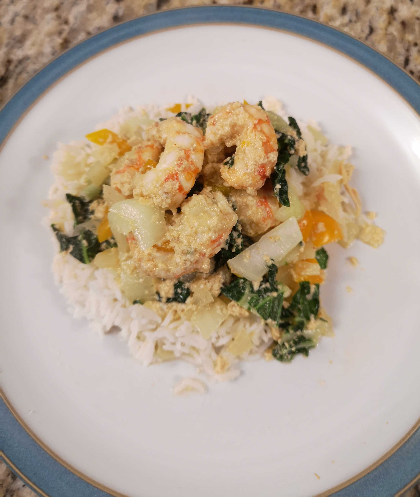

Home
Roasted Red Pepper Spaghetti
Cheddar & Green Onion Biscuits
Prawn Stirfry
Prawn Coconut Stir-fry
created by Jaime Hunt
this recipe is gluten free
Prawn Coconut Stir-fry
Ingredients
BC Spot Prawns
tsp coconut oil
Yellow peppers
onion
garlic
cilantro
mushrooms
1 can of coconut milk
red curry paste
Directions
chop vegtables
on medium heat saute garlic & onions in coconut oil
add mushrooms & peppers
stir in coconut milk and red curry paste
add prawns and cook until they slightly curl
serve over rice
Enjoy
